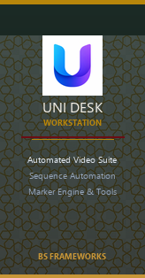

Master Your Production Pipeline in One Tap
The ultimate automation studio built for high-throughput video editors, wedding studios, and media teams. Chain Adobe Premiere Pro & Media Encoder into automated rendering, instant XML sequence mapping, smart ceremony detection, and fail-safe archiving.

Get the Latest Official Uni Desk Executable
Download the official high-performance installer instantly, or register your studio email to receive future update releases and exclusive enterprise utility scripts.
6522e60b652e9555eb8fdfba5b93d22f57fadb2ea42fb05fd57a1d23ac324504
Alternative Formats & Developer Builds
Built for High-Stakes Media Workflows
Designed specifically to eliminate repetitive manual clicks, file browsing bottlenecks, and overnight render crashes.
Zero-Click Domino Pipeline
Hands-free chaining from Media Encoder to Title Adder and Converter. Once batch rendering finishes, videos and photos automatically rename and relocate without a single user click.
Sub-Millisecond XML Locator
Traverses multi-terabyte project bins and active date folders in under 1ms with shared caching across all Adobe Premiere Pro CEP extensions, eliminating manual browsing forever.
Smart Ceremony Detection
Autonomous Nikah and ceremony marker recognition with intelligent ripple placement. Inserts group photos and titles across multiple audio/video tracks with zero footage cut.
Archive Vault & Safar Backups
Root-level drive scanning, SHA-256 integrity reconciliation, and automated archive validation to ensure event footage and client deliverables are permanently secured.
4-Tone Chimes & Native Alerts
Stay in the loop even when your workstation is locked or running overnight batches. Uni Desk plays high-fidelity completion chords and dispatches native Windows notifications.
Resilient EBUSY Lock Suppression
Zero crash guarantee against transient Windows and OneDrive file locks during log tailing, featuring exponential backoff retries and non-blocking background threads.
Explore Built-In Power Modules
Everything your studio needs from camera ingestion to post-event cloud sync.
Title Adder
Batch inject customizable lower-thirds, title cards, and animated opening sequences into Premiere projects.
Media Converter & Renamer
Blazing fast format transcoding, audio silence-fill, and systematic naming conventions with metadata preservation.
Prproj Generator
Autonomous Premiere project generation with predefined bin hierarchies, timeline settings, and marker templates.
Camera & Video Transfer
High-bandwidth multi-card offloading with bit-for-bit checksum verification and automated directory structure creation.
DriveSync & Cloud Portal
Synchronize project packages directly with Google Drive and enterprise network storage with background queuing.
Archive Vault
Deep cataloging of past seasons, ceremony types, client contact sheets, and historical storage metrics.
Changelog & Release History
Live updates fetched directly from our build manifest. See what's new in every production release.
System Requirements
Engineered to run efficiently on standard editing laptops up to multi-GPU studio workstations.
| Component | Minimum Requirement | Recommended Studio Setup |
|---|---|---|
| Operating System | Windows 10 64-bit (Build 1809+) or Linux (x64) | Windows 11 Pro 64-bit (Latest Update) |
| Processor | Intel Core i5 (8th Gen) or AMD Ryzen 5 | Intel Core i7/i9 (12th Gen+) or AMD Ryzen 7/9 |
| Memory (RAM) | 8 GB System RAM | 32 GB+ High-Speed RAM |
| Storage | 1 GB free disk space for application files | Fast NVMe SSD for active project cache |
| Adobe Integration | Adobe Premiere Pro 2021+ & Media Encoder | Adobe Creative Cloud 2024 / 2025 with CEP support |
Frequently Asked Questions
Once you click the download button, run Uni Desk_Setup_V26.10.0.exe. The NSIS installer will guide you through directory setup and automatically configure desktop shortcuts and background auto-update hooks. No complex prerequisites are needed.
Yes! Uni Desk is packaged for the Microsoft Store. You can install it with a single click directly from the Store app or via our website's Store badge. Store builds receive background updates seamlessly without triggering Windows UAC prompts.
Uni Desk operates non-destructively alongside Adobe Premiere Pro and Media Encoder via native CEP extensions and lightweight file watchers. Your raw sequence files, color grades, and audio tracks remain 100% untouched.
Open PowerShell and run: Get-FileHash ".\Uni Desk_Setup_V26.10.0.exe" -Algorithm SHA256. Compare the output string against the SHA-256 checksum displayed on our download card.